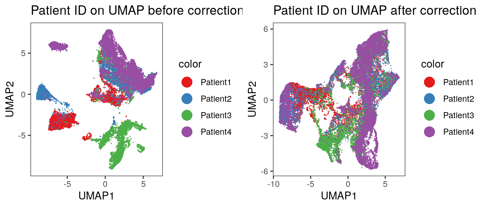
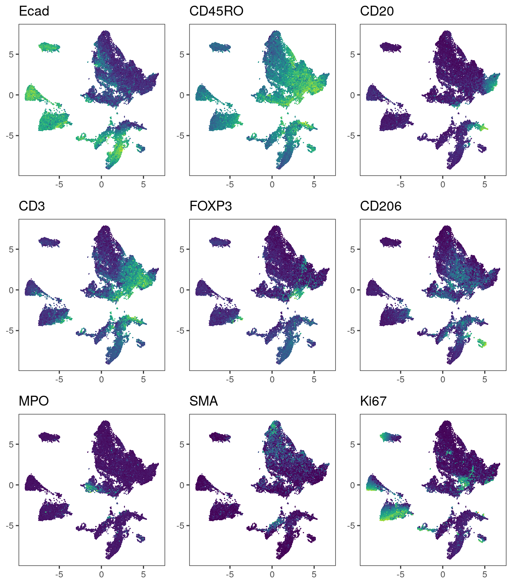
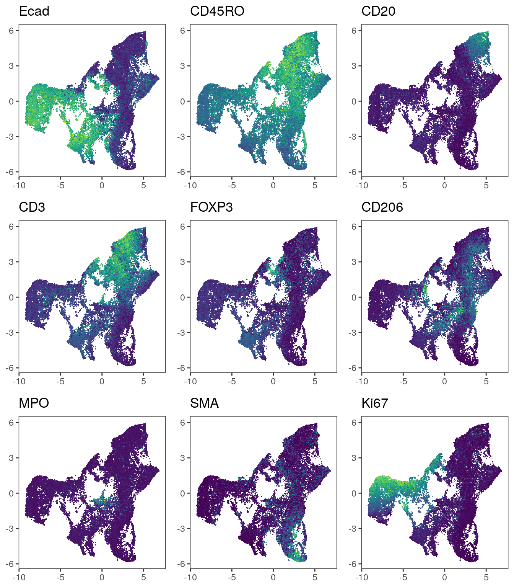

8 Batch effect correction
In Section 7.4 we observed staining/expression differences between the individual samples. This can arise due to technical (e.g., differences in sample processing) as well as biological (e.g., differential expression between patients/indications) effects. However, the combination of these effects hinders cell phenotyping via clustering as highlighted in Section 9.2.
To integrate cells across samples, we can use computational strategies developed for correcting batch effects in single-cell RNA sequencing data. In the following sections, we will use functions of the batchelor, harmony and Seurat packages to correct for such batch effects.
Of note: the correction approaches presented here aim at removing any differences between samples. This will also remove biological differences between the patients/indications. Nevertheless, integrating cells across samples can facilitate the detection of cell phenotypes via clustering.
First, we will read in the SpatialExperiment object containing the single-cell
data.
8.1 fastMNN correction
The batchelor package provides the mnnCorrect and fastMNN functions to
correct for differences between samples/batches. Both functions build up on
finding mutual nearest neighbors (MNN) among the cells of different samples and
correct expression differences between the batches (Haghverdi et al. 2018). The mnnCorrect function
returns corrected expression counts while the fastMNN functions performs the
correction in reduced dimension space. As such, fastMNN returns integrated
cells in form of a low dimensional embedding.
Paper: Batch effects in single-cell RNA-sequencing data are corrected by matching mutual nearest neighbors
Documentation: batchelor
8.1.1 Perform sample correction
Here, we apply the fastMNN function to integrate cells between
patients. By setting auto.merge = TRUE the function estimates the best
batch merging order by maximizing the number of MNN pairs at each merging step.
This is more time consuming than merging sequentially based on how batches appear in the
dataset (default). We again select the markers defined in Section 5.2
for sample correction.
The function returns a SingleCellExperiment object which contains corrected
low-dimensional coordinates for each cell in the reducedDim(out, "corrected")
slot. This low-dimensional embedding can be further used for clustering and
non-linear dimensionality reduction. We check that the order of cells is the
same between the input and output object and then transfer the corrected
coordinates to the main SpatialExperiment object.
library(batchelor)
set.seed(220228)
out <- fastMNN(spe, batch = spe$patient_id,
auto.merge = TRUE,
subset.row = rowData(spe)$use_channel,
assay.type = "exprs")
# Check that order of cells is the same
stopifnot(all.equal(colnames(spe), colnames(out)))
# Transfer the correction results to the main spe object
reducedDim(spe, "fastMNN") <- reducedDim(out, "corrected")The computational time of the fastMNN function call is
1.49 minutes.
Of note, the warnings that the fastMNN function produces can be avoided as follows:
- The following warning can be avoided by setting
BSPARAM = BiocSingular::ExactParam()
Warning in (function (A, nv = 5, nu = nv, maxit = 1000, work = nv + 7, reorth = TRUE, :
You're computing too large a percentage of total singular values, use a standard svd instead.- The following warning can be avoided by requesting fewer singular values by setting
d = 30
In check_numbers(k = k, nu = nu, nv = nv, limit = min(dim(x)) - :
more singular values/vectors requested than available8.1.2 Quality control of correction results
The fastMNN function further returns outputs that can be used to assess the
quality of the batch correction. The metadata(out)$merge.info entry collects
diagnostics for each individual merging step. Here, the batch.size and
lost.var entries are important. The batch.size entry reports the relative
magnitude of the batch effect and the lost.var entry represents the percentage
of lost variance per merging step. A large batch.size and low lost.var
indicate sufficient batch correction.
## DataFrame with 3 rows and 3 columns
## left right batch.size
## <List> <List> <numeric>
## 1 Patient4 Patient2 0.381635
## 2 Patient4,Patient2 Patient1 0.581013
## 3 Patient4,Patient2,Patient1 Patient3 0.767376## Patient1 Patient2 Patient3 Patient4
## [1,] 0.000000000 0.031154864 0.00000000 0.046198914
## [2,] 0.043363546 0.009772150 0.00000000 0.011931892
## [3,] 0.005394755 0.003023119 0.07219394 0.005366304We observe that Patient4 and Patient2 are most similar with a low batch effect. Merging cells of Patient3 into the combined batch of Patient1, Patient2 and Patient4 resulted in the highest percentage of lost variance and the detection of the largest batch effect. In the next paragraph we can visualize the correction results.
8.1.3 Visualization
The simplest option to check if the sample effects were corrected is by using non-linear dimensionality reduction techniques and observe mixing of cells across samples. We will recompute the UMAP embedding using the corrected low-dimensional coordinates for each cell.
Next, we visualize the corrected UMAP while overlaying patient IDs.
library(cowplot)
library(dittoSeq)
library(viridis)
# visualize patient id
p1 <- dittoDimPlot(spe, var = "patient_id",
reduction.use = "UMAP", size = 0.2) +
scale_color_manual(values = metadata(spe)$color_vectors$patient_id) +
ggtitle("Patient ID on UMAP before correction")
p2 <- dittoDimPlot(spe, var = "patient_id",
reduction.use = "UMAP_mnnCorrected", size = 0.2) +
scale_color_manual(values = metadata(spe)$color_vectors$patient_id) +
ggtitle("Patient ID on UMAP after correction")
plot_grid(p1, p2)
We observe an imperfect merging of Patient3 into all other samples. This was already seen when displaying the merging information above. We now also visualize the expression of selected markers across all cells before and after batch correction.
markers <- c("Ecad", "CD45RO", "CD20", "CD3", "FOXP3", "CD206", "MPO", "SMA", "Ki67")
# Before correction
plot_list <- multi_dittoDimPlot(spe, var = markers, reduction.use = "UMAP",
assay = "exprs", size = 0.2, list.out = TRUE)
plot_list <- lapply(plot_list, function(x) x + scale_color_viridis())
plot_grid(plotlist = plot_list) 
# After correction
plot_list <- multi_dittoDimPlot(spe, var = markers, reduction.use = "UMAP_mnnCorrected",
assay = "exprs", size = 0.2, list.out = TRUE)
plot_list <- lapply(plot_list, function(x) x + scale_color_viridis())
plot_grid(plotlist = plot_list) 
We observe that immune cells across patients are merged after batch correction
using fastMNN. However, the tumor cells of different patients still cluster
separately.
8.2 harmony correction
The harmony algorithm performs batch correction by iteratively clustering and
correcting the positions of cells in PCA space (Korsunsky et al. 2019). We will first
perform PCA on the asinh-transformed counts and then call the RunHarmony
function to perform data integration.
Paper: Fast, sensitive and accurate integration of single-cell data with Harmony
Documentation: harmony
Similar to the fastMNN function, harmony returns the corrected
low-dimensional coordinates for each cell. These can be transfered to the
reducedDim slot of the original SpatialExperiment object.
library(harmony)
library(BiocSingular)
spe <- runPCA(spe,
subset_row = rowData(spe)$use_channel,
exprs_values = "exprs",
ncomponents = 30,
BSPARAM = ExactParam())
set.seed(230616)
out <- RunHarmony(spe, group.by.vars = "patient_id")
# Check that order of cells is the same
stopifnot(all.equal(colnames(spe), colnames(out)))
reducedDim(spe, "harmony") <- reducedDim(out, "HARMONY")The computational time of the HarmonyMatrix function call is
0.48 minutes.
8.2.1 Visualization
We will now again visualize the cells in low dimensions after UMAP embedding.
# visualize patient id
p1 <- dittoDimPlot(spe, var = "patient_id",
reduction.use = "UMAP", size = 0.2) +
scale_color_manual(values = metadata(spe)$color_vectors$patient_id) +
ggtitle("Patient ID on UMAP before correction")
p2 <- dittoDimPlot(spe, var = "patient_id",
reduction.use = "UMAP_harmony", size = 0.2) +
scale_color_manual(values = metadata(spe)$color_vectors$patient_id) +
ggtitle("Patient ID on UMAP after correction")
plot_grid(p1, p2)
And we visualize selected marker expression as defined above.
# Before correction
plot_list <- multi_dittoDimPlot(spe, var = markers, reduction.use = "UMAP",
assay = "exprs", size = 0.2, list.out = TRUE)
plot_list <- lapply(plot_list, function(x) x + scale_color_viridis())
plot_grid(plotlist = plot_list) 
# After correction
plot_list <- multi_dittoDimPlot(spe, var = markers, reduction.use = "UMAP_harmony",
assay = "exprs", size = 0.2, list.out = TRUE)
plot_list <- lapply(plot_list, function(x) x + scale_color_viridis())
plot_grid(plotlist = plot_list) 
We observe a more aggressive merging of cells from different patients compared
to the results after fastMNN correction. Importantly, immune cell and epithelial
markers are expressed in distinct regions of the UMAP.
8.3 Seurat correction
The Seurat package provides a number of functionalities to analyze single-cell
data. As such it also allows the integration of cells across different samples.
Conceptually, Seurat performs batch correction similarly to fastMNN by
finding mutual nearest neighbors (MNN) in low dimensional space before
correcting the expression values of cells (Stuart et al. 2019).
Paper: Comprehensive Integration of Single-Cell Data
Documentation: Seurat
To use Seurat, we will first create a Seurat object from the SpatialExperiment
object and add relevant metadata. The object also needs to be split by patient
prior to integration.
library(Seurat)
library(SeuratObject)
seurat_obj <- as.Seurat(spe, counts = "counts", data = "exprs")
seurat_obj <- AddMetaData(seurat_obj, as.data.frame(colData(spe)))
seurat.list <- SplitObject(seurat_obj, split.by = "patient_id")To avoid long run times, we will use an approach that relies on reciprocal PCA
instead of canonical correlation analysis for dimensionality reduction and
initial alignment. For an extended tutorial on how to use Seurat for data
integration, please refer to their
vignette.
We will first define the features used for integration and perform PCA on cells
of each patient individually. The FindIntegrationAnchors function detects MNNs between
cells of different patients and the IntegrateData function corrects the
expression values of cells. We slightly increase the number of neighbors to be
considered for MNN detection (the k.anchor parameter). This increases the integration
strength.
features <- rownames(spe)[rowData(spe)$use_channel]
seurat.list <- lapply(X = seurat.list, FUN = function(x) {
x <- ScaleData(x, features = features, verbose = FALSE)
x <- RunPCA(x, features = features, verbose = FALSE, approx = FALSE)
return(x)
})
anchors <- FindIntegrationAnchors(object.list = seurat.list,
anchor.features = features,
reduction = "rpca",
k.anchor = 20)
combined <- IntegrateData(anchorset = anchors)We now select the integrated assay and perform PCA dimensionality reduction.
The cell coordinates in PCA reduced space can then be transferred to the
original SpatialExperiment object. Of note: by splitting the object into
individual batch-specific objects, the ordering of cells in the integrated
object might not match the ordering of cells in the input object. In this case,
columns will need to be reordered. Here, we test if the ordering of cells in the
integrated Seurat object matches the ordering of cells in the main
SpatialExperiment object.
DefaultAssay(combined) <- "integrated"
combined <- ScaleData(combined, verbose = FALSE)
combined <- RunPCA(combined, npcs = 30, verbose = FALSE, approx = FALSE)
# Check that order of cells is the same
stopifnot(all.equal(colnames(spe), colnames(combined)))
reducedDim(spe, "seurat") <- Embeddings(combined, reduction = "pca")The computational time of the Seurat function calls is
2.87 minutes.
8.3.1 Visualization
As above, we recompute the UMAP embeddings based on Seurat integrated results
and visualize the embedding.
Visualize patient IDs.
# visualize patient id
p1 <- dittoDimPlot(spe, var = "patient_id",
reduction.use = "UMAP", size = 0.2) +
scale_color_manual(values = metadata(spe)$color_vectors$patient_id) +
ggtitle("Patient ID on UMAP before correction")
p2 <- dittoDimPlot(spe, var = "patient_id",
reduction.use = "UMAP_seurat", size = 0.2) +
scale_color_manual(values = metadata(spe)$color_vectors$patient_id) +
ggtitle("Patient ID on UMAP after correction")
plot_grid(p1, p2)
Visualization of marker expression.
# Before correction
plot_list <- multi_dittoDimPlot(spe, var = markers, reduction.use = "UMAP",
assay = "exprs", size = 0.2, list.out = TRUE)
plot_list <- lapply(plot_list, function(x) x + scale_color_viridis())
plot_grid(plotlist = plot_list) 
# After correction
plot_list <- multi_dittoDimPlot(spe, var = markers, reduction.use = "UMAP_seurat",
assay = "exprs", size = 0.2, list.out = TRUE)
plot_list <- lapply(plot_list, function(x) x + scale_color_viridis())
plot_grid(plotlist = plot_list) 
Similar to the methods presented above, Seurat integrates immune cells correctly.
When visualizing the patient IDs, slight patient-to-patient differences within tumor
cells can be detected.
Choosing the correct integration approach is challenging without having ground truth cell labels available. It is recommended to compare different techniques and different parameter settings. Please refer to the documentation of the individual tools to become familiar with the possible parameter choices. Furthermore, in the following section, we will discuss clustering and classification approaches in light of expression differences between samples.
In general, it appears that MNN-based approaches are less conservative in terms
of merging compared to harmony. On the other hand, harmony could well merge
cells in a way that regresses out biological signals.
8.5 Session Info
SessionInfo
## R version 4.3.2 (2023-10-31)
## Platform: x86_64-pc-linux-gnu (64-bit)
## Running under: Ubuntu 22.04.3 LTS
##
## Matrix products: default
## BLAS: /usr/lib/x86_64-linux-gnu/openblas-pthread/libblas.so.3
## LAPACK: /usr/lib/x86_64-linux-gnu/openblas-pthread/libopenblasp-r0.3.20.so; LAPACK version 3.10.0
##
## locale:
## [1] LC_CTYPE=en_US.UTF-8 LC_NUMERIC=C
## [3] LC_TIME=en_US.UTF-8 LC_COLLATE=en_US.UTF-8
## [5] LC_MONETARY=en_US.UTF-8 LC_MESSAGES=en_US.UTF-8
## [7] LC_PAPER=en_US.UTF-8 LC_NAME=C
## [9] LC_ADDRESS=C LC_TELEPHONE=C
## [11] LC_MEASUREMENT=en_US.UTF-8 LC_IDENTIFICATION=C
##
## time zone: Etc/UTC
## tzcode source: system (glibc)
##
## attached base packages:
## [1] stats4 stats graphics grDevices utils datasets methods
## [8] base
##
## other attached packages:
## [1] testthat_3.2.1 Seurat_5.0.1
## [3] SeuratObject_5.0.1 sp_2.1-2
## [5] BiocSingular_1.18.0 harmony_1.2.0
## [7] Rcpp_1.0.11 viridis_0.6.4
## [9] viridisLite_0.4.2 dittoSeq_1.14.0
## [11] cowplot_1.1.2 scater_1.30.1
## [13] ggplot2_3.4.4 scuttle_1.12.0
## [15] SpatialExperiment_1.12.0 batchelor_1.18.1
## [17] SingleCellExperiment_1.24.0 SummarizedExperiment_1.32.0
## [19] Biobase_2.62.0 GenomicRanges_1.54.1
## [21] GenomeInfoDb_1.38.5 IRanges_2.36.0
## [23] S4Vectors_0.40.2 BiocGenerics_0.48.1
## [25] MatrixGenerics_1.14.0 matrixStats_1.2.0
##
## loaded via a namespace (and not attached):
## [1] RcppAnnoy_0.0.21 splines_4.3.2
## [3] later_1.3.2 bitops_1.0-7
## [5] tibble_3.2.1 polyclip_1.10-6
## [7] fastDummies_1.7.3 lifecycle_1.0.4
## [9] rprojroot_2.0.4 globals_0.16.2
## [11] lattice_0.21-9 MASS_7.3-60
## [13] magrittr_2.0.3 plotly_4.10.3
## [15] sass_0.4.8 rmarkdown_2.25
## [17] jquerylib_0.1.4 yaml_2.3.8
## [19] httpuv_1.6.13 sctransform_0.4.1
## [21] spam_2.10-0 spatstat.sparse_3.0-3
## [23] reticulate_1.34.0 pbapply_1.7-2
## [25] RColorBrewer_1.1-3 ResidualMatrix_1.12.0
## [27] pkgload_1.3.3 abind_1.4-5
## [29] zlibbioc_1.48.0 Rtsne_0.17
## [31] purrr_1.0.2 RCurl_1.98-1.13
## [33] GenomeInfoDbData_1.2.11 ggrepel_0.9.4
## [35] irlba_2.3.5.1 spatstat.utils_3.0-4
## [37] listenv_0.9.0 pheatmap_1.0.12
## [39] goftest_1.2-3 RSpectra_0.16-1
## [41] spatstat.random_3.2-2 fitdistrplus_1.1-11
## [43] parallelly_1.36.0 DelayedMatrixStats_1.24.0
## [45] leiden_0.4.3.1 codetools_0.2-19
## [47] DelayedArray_0.28.0 tidyselect_1.2.0
## [49] farver_2.1.1 ScaledMatrix_1.10.0
## [51] spatstat.explore_3.2-5 jsonlite_1.8.8
## [53] BiocNeighbors_1.20.1 ellipsis_0.3.2
## [55] progressr_0.14.0 ggridges_0.5.5
## [57] survival_3.5-7 tools_4.3.2
## [59] ica_1.0-3 glue_1.6.2
## [61] gridExtra_2.3 SparseArray_1.2.3
## [63] xfun_0.41 dplyr_1.1.4
## [65] withr_2.5.2 fastmap_1.1.1
## [67] fansi_1.0.6 digest_0.6.33
## [69] rsvd_1.0.5 R6_2.5.1
## [71] mime_0.12 colorspace_2.1-0
## [73] scattermore_1.2 tensor_1.5
## [75] spatstat.data_3.0-3 RhpcBLASctl_0.23-42
## [77] utf8_1.2.4 tidyr_1.3.0
## [79] generics_0.1.3 data.table_1.14.10
## [81] httr_1.4.7 htmlwidgets_1.6.4
## [83] S4Arrays_1.2.0 uwot_0.1.16
## [85] pkgconfig_2.0.3 gtable_0.3.4
## [87] lmtest_0.9-40 XVector_0.42.0
## [89] brio_1.1.4 htmltools_0.5.7
## [91] dotCall64_1.1-1 bookdown_0.37
## [93] scales_1.3.0 png_0.1-8
## [95] knitr_1.45 reshape2_1.4.4
## [97] rjson_0.2.21 nlme_3.1-163
## [99] cachem_1.0.8 zoo_1.8-12
## [101] stringr_1.5.1 KernSmooth_2.23-22
## [103] parallel_4.3.2 miniUI_0.1.1.1
## [105] vipor_0.4.7 desc_1.4.3
## [107] pillar_1.9.0 grid_4.3.2
## [109] vctrs_0.6.5 RANN_2.6.1
## [111] promises_1.2.1 beachmat_2.18.0
## [113] xtable_1.8-4 cluster_2.1.4
## [115] waldo_0.5.2 beeswarm_0.4.0
## [117] evaluate_0.23 magick_2.8.2
## [119] cli_3.6.2 compiler_4.3.2
## [121] rlang_1.1.2 crayon_1.5.2
## [123] future.apply_1.11.1 labeling_0.4.3
## [125] plyr_1.8.9 ggbeeswarm_0.7.2
## [127] stringi_1.8.3 deldir_2.0-2
## [129] BiocParallel_1.36.0 munsell_0.5.0
## [131] lazyeval_0.2.2 spatstat.geom_3.2-7
## [133] Matrix_1.6-4 RcppHNSW_0.5.0
## [135] patchwork_1.1.3 sparseMatrixStats_1.14.0
## [137] future_1.33.1 shiny_1.8.0
## [139] highr_0.10 ROCR_1.0-11
## [141] igraph_1.6.0 bslib_0.6.1